Research
07. 2017 – Present
Skeleton Body Pose Prediction Based On First Person Videos
General Robotics, Automation, Sensing and Perception (GRASP) Laboratory, University of Pennsylvania
Research Assistant to Prof. Jianbo Shi
• Three-dimensional-reconstructed context from highly jittery, blurry and narrow ego-centric frames with Multi-View Stereo.
• Tracked joints with LSTM in first-person videos, to estimate and predict skeleton body pose of camera-holder.
03. 2017 – Present
Characterizing Psychological Problems via Interactive Devices
3D Image Simulation Laboratory, Tsinghua University
Research Assistant to Prof. Huimin Ma
• Recognized patterns of mental diseases, in behavioral and biometric data from interactive devices.
• Now analyzed data collected from psychology experiments and diseases institutes, experimented ML methods.
12. 2016 – 2017.06
End-to-End Printed Chinese Text Recognition Based on CNN
Intellectual Graphs and Texts Processing Laboratory, Tsinghua University
Research Assistant to Prof. Shengjin Wang
• Constructed THU Chinese printed character database (THU Chinese Database), containing 3500+ categories of Chinese characters for both offline training and validation.
• Trained a multi-pathway convolutional neural network, achieved a prevision of 86.8% on THU Chinese Database.
• Proposed solution was purchased by China Mobile.
10. 2016 – 2016.12
Magnetic Resonance Imaging (MRI) Registration
Electrical Engineerign, Stanford University
Participants in a remote project of Prof. Tsachy Weissman
• Experimented with Maximum Likelihood Estimation approach, a mutual information based registration method.
• Applied a bias-corrected version of MLE estimator in smooth regime, reducing the Mean Square Error to 1% of traditional MLE approach.
• Complete a technique report and demo. Ranked 4th out of 146 participants.
 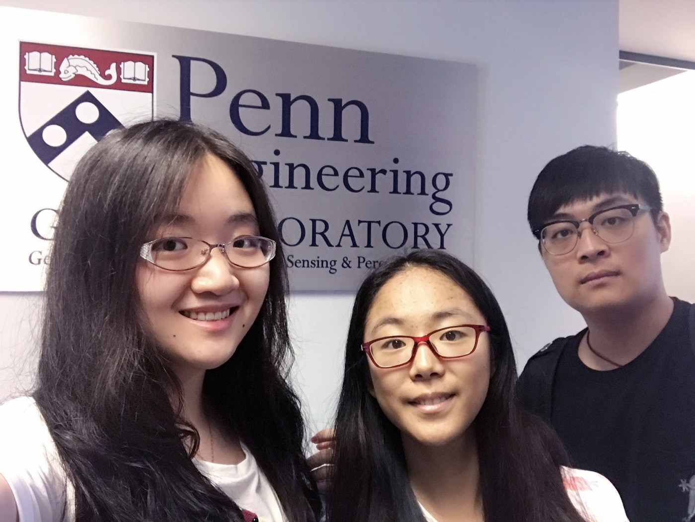
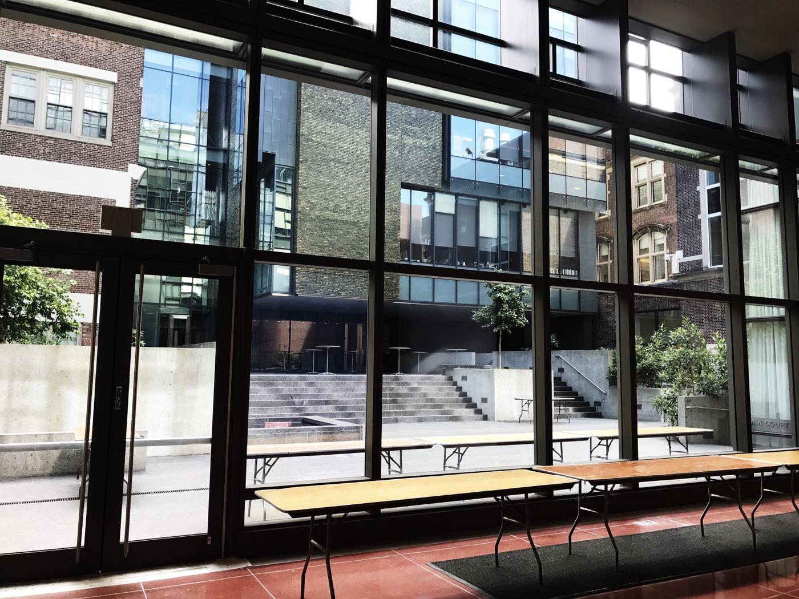
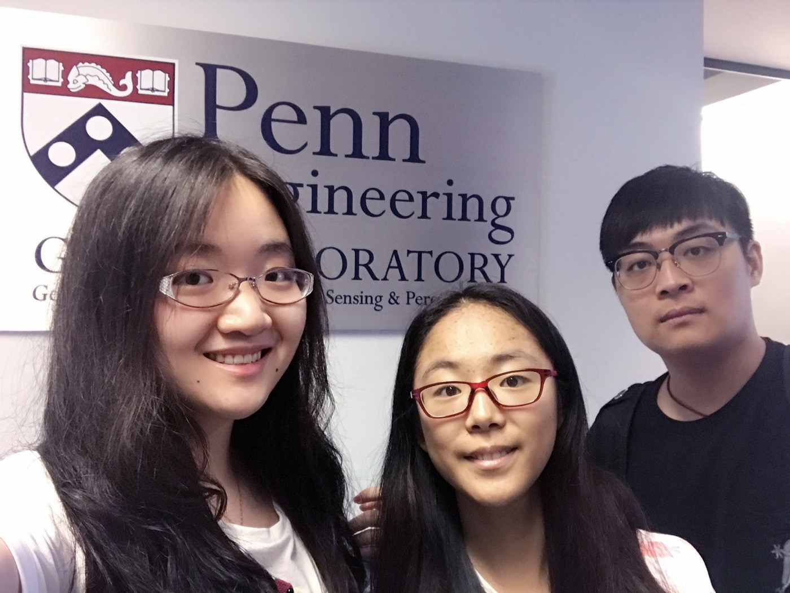
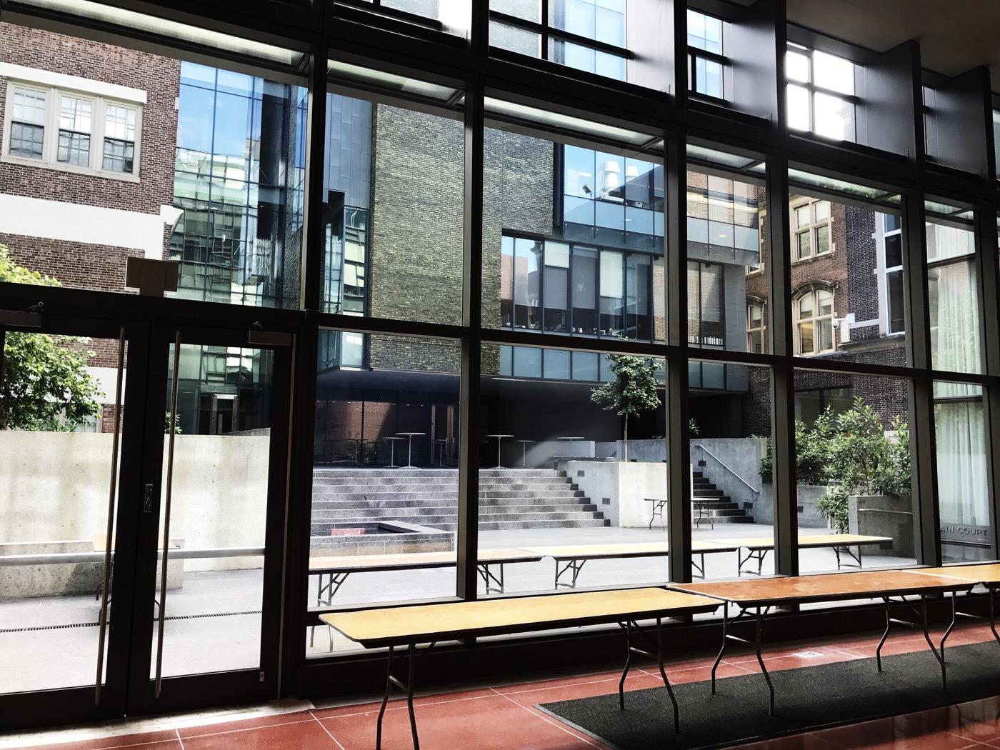
 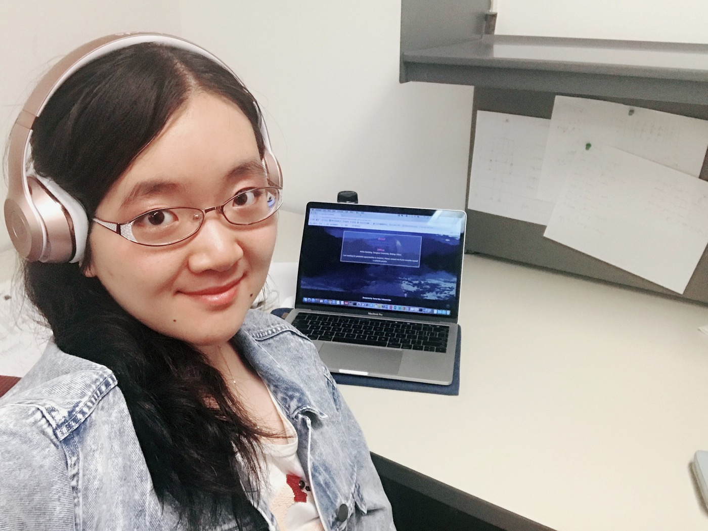
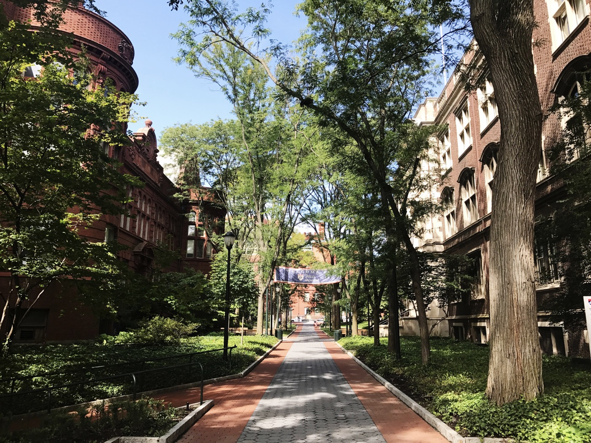
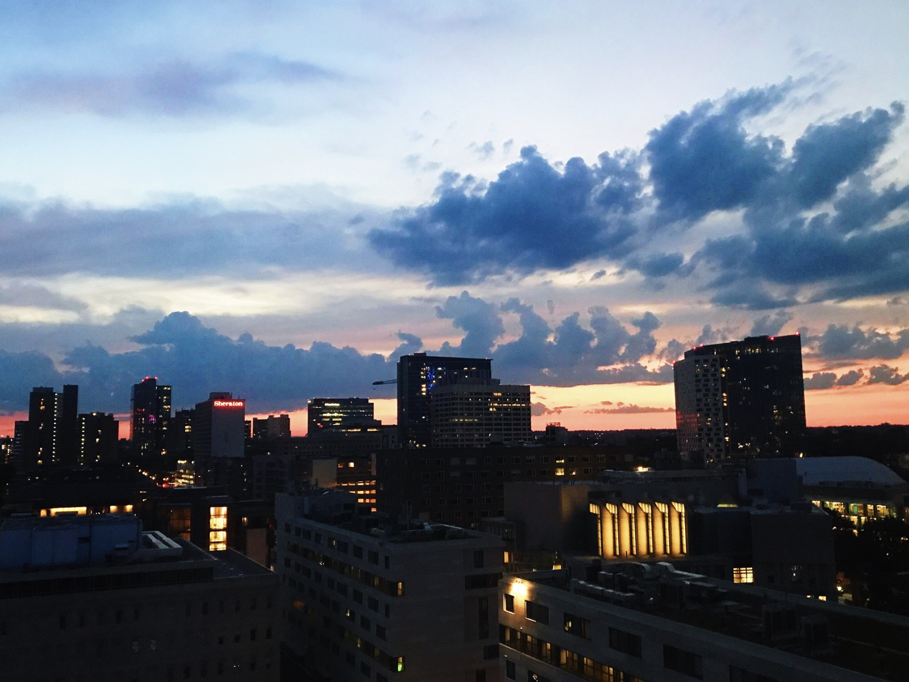
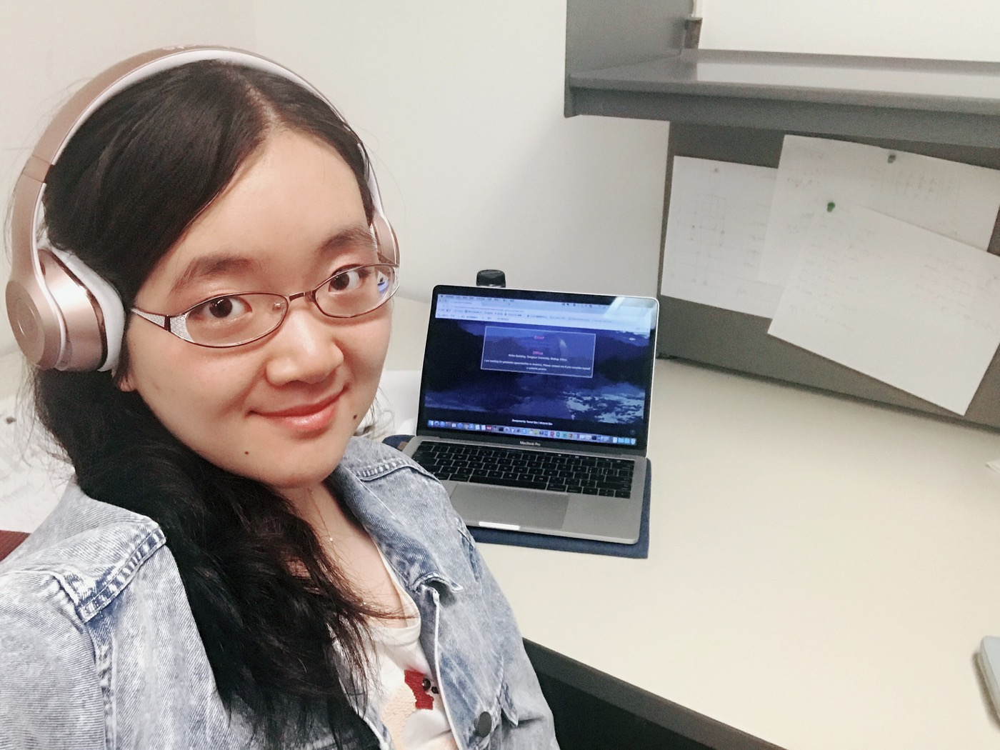
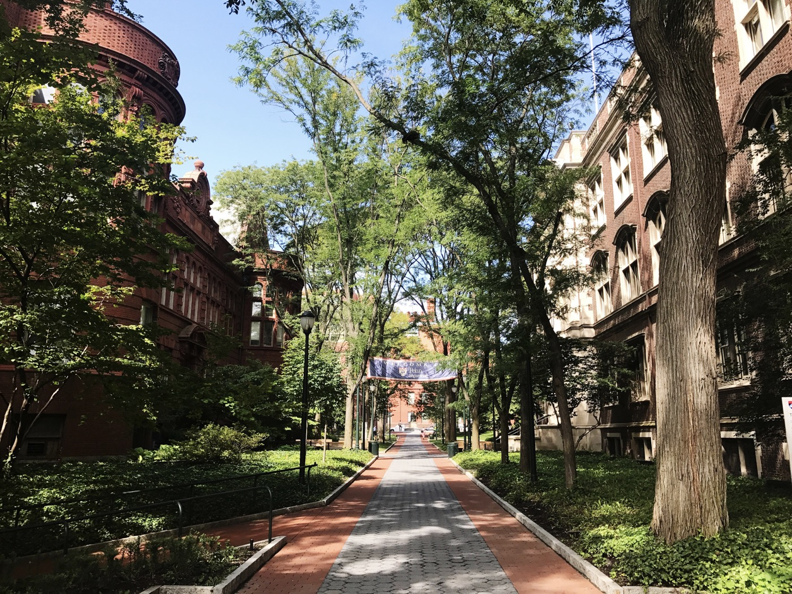
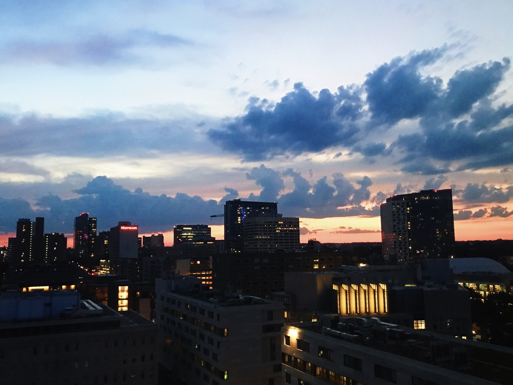


 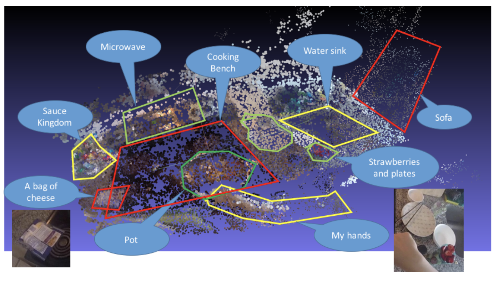
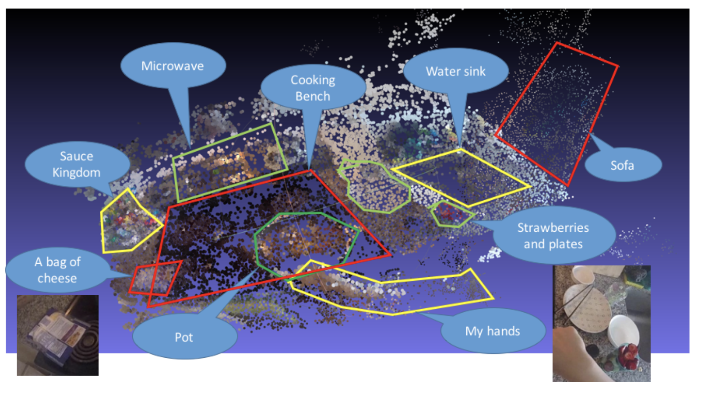


{kind=link}
{kind=link}
{kind=link}